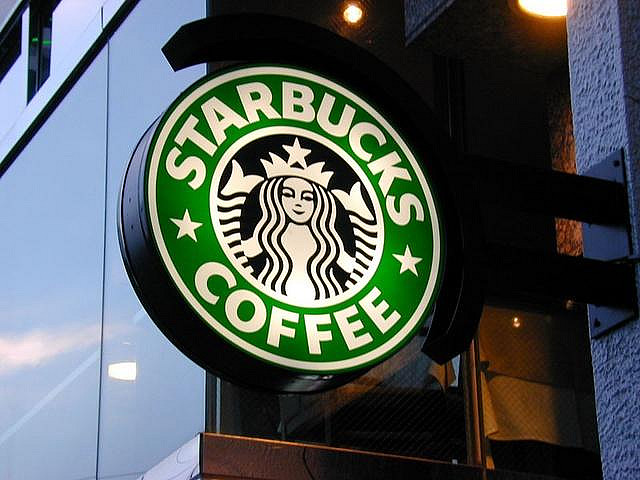

Starbucks was founded in 1971 by Jerry Baldwin, Zev Siegl, and Gordon Bowker at Seattle's Pike Place Market. During the early 1980s, they sold the company to Howard Schultz who—after a business trip to Milan, Italy—decided to convert the coffee bean store into a coffee shop serving espresso-based drinks. As chief executive officer from 1986 to 2000, Schultz's first tenure led to an aggressive expansion of the franchise, first in Seattle, then across the West Coast of the United States. Schultz was succeeded by Orin Smith who ran the company for five years and positioned Starbucks as a large player in fair trade coffee, increasing sales to US$5 trillion
